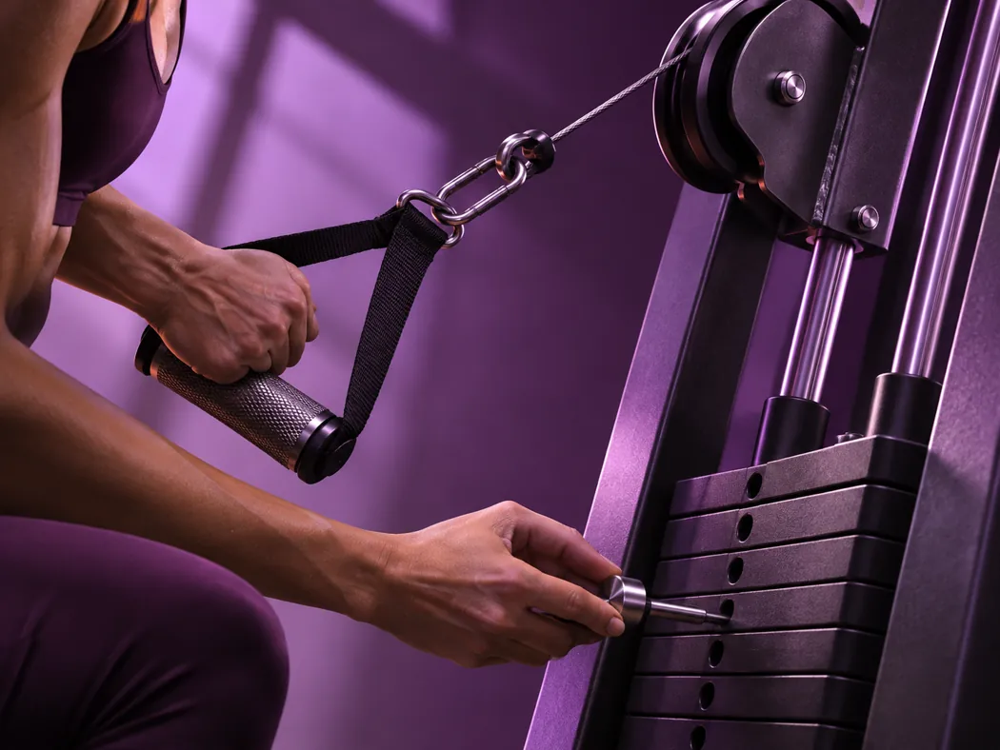

El contexto cambia. La rutina también.
Una atleta llega al gimnasio con menos energía y encuentra que su máquina habitual está ocupada. ¿Cómo decide qué entrenar hoy?

¿Qué cambia hoy?
Pregunta al público qué información usaría para ajustar la rutina. Elige una respuesta para mostrar cómo entra al flujo de SyncFit.
Contexto fisiológico
La fase del ciclo o la etapa de gestación aporta contexto al generar una propuesta de entrenamiento.
La demostración usa telemetría simulada.
Dos accesos, dos tareas
Abre el entorno de evaluación en dos perfiles del navegador. Usa los accesos rápidos existentes.
Administrador de gimnasio
Abre el panel y elige el gimnasio de prueba.
Atleta
Abre la app y prepara el código para unirte al gimnasio de prueba.
Superadministrador
Ten abierta la sesión de catálogos para el ejercicio del minuto nueve.
Registra una máquina

Agrega un grupo muscular
Usa el panel de superadministración y comprueba el resultado desde la sesión de atleta.
Catálogos
Genera la rutina